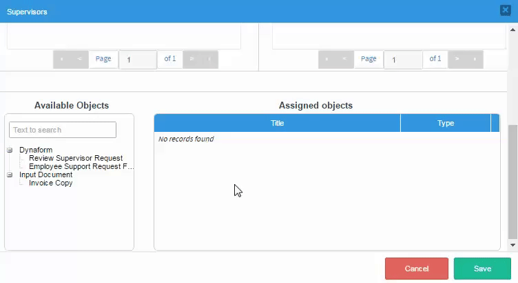
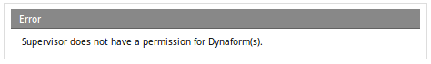

Overview
Process supervisors are users who have special privileges to oversee, review and modify the cases of a particular process. Often the manager or department head in an organization will be assigned as a process supervisor. Unlike process permissions, which give read-only access to cases, a process supervisor can be given both read and write access to cases.
Process supervisors can:
- Edit the data of cases with To Do status.
- See all the cases in a process even if they are not assigned to any tasks in the case or haven’t participated in the case.
- Edit the data in Dynaforms if they have ben assigned to those Dynaforms.
- Delete and resubmit input documents if they have been assigned to those input documents.
- Upload new input documents when a case is running, so users who are running the case can see the new uploaded documents.
- Unpause cases from the case list.
Process supervisors can't modify information in a completed case, so completed cases won't be listed in the review option unless they are searched by case ID. If DynaForms, output and input documents from a completed case need to be visible to the supervisor, then the correct process permission to see those documents needs be given to the supervisor.
Adding a Process Supervisor
User Permissions
Before starting to work with process supervisors, it is necessary to assign the following permissions to the supervisor user.
- PM_SUPERVISOR: (Required). To assign a user as a supervisor, the user must have the PM_SUPERVISOR permission assigned to their role. Otherwise, the user won't be displayed in the Available Users list.
- PM_REASSIGNCASE_SUPERVISOR: (Optional) To reassign any supervised case, the user must have the PM_REASSIGNCASE_SUPERVISOR permission assigned to their role. Otherwise, the Reassign menu option won't be available under the home tab.
Defining a Process Supervisor
Only users with the PM_SUPERVISOR permission in their role can be assigned as process supervisors. This permission is included by default in the PROCESSMAKER_ADMIN and PROCESSMAKER_MANAGER roles, but not in the PROCESSMAKER_OPERATOR role.
Since it is generally not a good idea to give managers and department heads the full capabilities of a PROCESSMAKER_ADMIN role, because they might accidentally modify the definition of the processes, it is recommended to give process supervisors the PROCESSMAKER_MANAGER role, or to create a new role to perform specific actions.
For example to edit case data, create a new role with the following permissions:
- PM_LOGIN
- PM_CASES
- PM_SUPERVISOR
- PM_REASSIGNCASES
To see all the cases from all the other processes, add the following two permissions:
- PM_ALLCASES
- PM_DASHBOARD
After creating the new supervisor role, assign that role to the user(s) who will be the processes supervisor(s) and open the process that will be supervised.
Note: Please take note that if the PM_SUPERVISOR permission is removed from the supervisor user's role, he/she won't be able to access the Review option in the Process Supervisor menu or perform any action on the cases, even if he/she remains assigned as a supervisor user. Therefore, please remember that if any permission is changed, removed or added to a role, it is necessary to update the process design to fit the newly assigned or removed permissions.
Adding a Supervisor
Once the process where the process supervisors will be assigned is opened, click on the Supervisors option in the main toolbox at the right side of the screen.

The following window will open:

This window contains the following sections:
Available Users List and Assigned Supervisors List
In the first part of the supervisors window, a user or a group of users can be assigned as process supervisor(s). The users/groups assigned as process supervisors will be able to see all open cases in the process and any input documents in the case.

- Search: Enter the name of the user or group to search. These fields have the autocomplete property, which lists all matches as text is introduced.
- View all: Click on this button to list the users and groups available to be assigned (in the first panel), or to list the users and groups already assigned (in the second panel).
- View users: Click on this button to view available users in the first panel, and to only view assigned users in the second panel.
- View groups:Click on this button to only view available groups in the first panel, and to only view assigned groups in the second panel.
- Pagination control: Each panel lists ten items before going to another page. Click on the grey arrows to navigate through these pages.
To add a supervisor, click on the green arrow or simply drag and drop the name of the user or group from the Available Users List to the Assigned Supervisors list. To remove an assigned group or user from the supervisor list, click on the x icon at the right side of the name of the user or group, or simply drag and drop the user/group back to the Available users list.

If the lists of users or groups in these panels are long, use the filters above each panel to list users or groups more quickly, or use the Search textbox to find a specific user or group.
Available Objects and Assigned Objects
Scroll down the supervisors window to define the Dynaforms and input documents the process supervisors will have access to. The objects assigned to the process supervisor can be modified or reassigned if necessary. Notice that this section contains the following elements:

- Available Objects: A list of available objects. An object can be a Dynaform or an input document.
- Text to search: A search box that can be used to search a specific Dynaform.
- Dynaform: The list of all the Dynaforms that exist in the process. By assigning a Dynaform, process supervisors will be able to modify data stored during a case.
- Input Document: The list of all the input documents that exist in the process. By assigning an input document to the supervisor, they will be able to:
- Attach a new input document. The attached input document will be available to the user who is assigned to the case, and the user has the required process permissions for the uploaded documents.
- Download the input document.
- Delete the input document. Take into account that if the supervisor deletes a document, it won't be available for the user running the case.
- Assigned Objects: A list of all the assigned Dynaforms and input documents.
To assign an object, simply drag and drop the name of the object from the Available Objects list to the Assigned Objects panel. To remove it from the list, simply click on the red x button. The object will be erased from the Assigned objects panel and will be available in the Available Objects panel.

Working as a Process Supervisor
Process Supervisors can access the following interfaces:
- The Supervising filter where you can check your supervised cases.
- The Batch Routing to route cases in batch.
- The Tasks Reassignments to reassign cases.
This section explains the Supervising section. To check a case go to Home > My Cases > Supervising. All the cases with To Do or Unassigned status of the supervised process list are in the panel below the Supervising tile. Note that cases currently in their initial task cannot be displayed because these cases remain in Draft status. Once cases move to the second or subsequent task(s), they are included in the list.

Double click a case row to open the case. The Case Information panel displays where details display to continue or cancel the case.
As of ProcessMaker 3.8.1 instead of continuing or canceling the case, Process Supervisors have the following actions:
- The Reassign button allows Process Supervisors to change the task owner.
- The Assign button allows Process Supervisors to have a forced assignment of a task.
- The Review Case button allows Process Supervisors to open the Supervisor Multiple-Step, which could be Dynaforms and Input Documents steps defined in the Assigned Objects.

Reassign Cases
The Reassign action allows you to change the task owner. Follow the next step to reassign a case task.
Note: The Reassign option is not available if there is no other user to assign different to the current one.
- Go to Home > My Cases > Supervising.
- Double click a case row to open the case. The case displays all the task threads in a table.
- Locate a task row. In the Actions column, click Reassign. The Reassign Case window displays.

- In the Select a User field, select the user to reassign. It is a required field.
- In the Reason to reassign this case field, enter the reason why the case task is being reassigned.
- Enable the Notify users of case toggle to notify the case task assigned users.
- Click the Reassign button to finalize the reassignment process. Otherwise, click Cancel.
Assign Cases
The Assign action allows you to have a forced assignment of a case task without assigned users.
- Go to Home > My Cases > Supervising.
- Double click a case row to open the case. The case displays all the task threads in a table.
- Locate a task row. In the Actions column, click Assign. The Assign Case window displays.

- In the Select a User field, select the user to assign. It is a required field.
- In the Reason field, enter the reason why the case task is being assigned.
- Enable the Notify users of case toggle to notify the case task assigned user.
- Click the Assign button to finalize the assignment process. Otherwise, click Cancel.
Review Cases
The Review Case button allows you to open the Supervisor Multiple-Step, which could be Dynaforms and Input Documents steps defined in the Assigned Objects.
When you review the case, all the case options are available as when running a case. Additionally, the Supervisor Multiple-Step works as follows:
- In Dynaforms, click the Submit or the Next Step buttons to go to the next steps.
- In Input Documents, click the Next Step button to go to the next steps.
- If there are no more steps after submitting a form or going to the next steps, the Case Information displays.
- The Assigned Objects uses the pool of users defined for that task in the unassigned status. If it uses Self Service Value Base, it should use the ProcessMaker variable with that pool of users defined.
Note: The Process Supervisor Multiple-Step just update information and display the steps. It does not run triggers.
Editing Dynaforms and Input Documents as Supervisor
Supervisors can modify the information in Dynaforms and the files in Input Documents only if the case has To Do status. To do this, access the case under Home > My Cases > Supervising, and then click Review Case and the Steps menu to display a list of the available Dynaforms and Input Documents from the process that the Supervisor can edit. Remember that only objects that were assigned to the supervisor display in the Steps list.
To edit the data in a Dynaform or the list of files in a Input Document, click it to open and then edit. When done editing a Dynaform's data, click its submit button to save it and a message displays green that the data has been saved. Note that no Next Step link is available when filling in Dynaforms as the supervisor, so add submit buttons to all Dynaforms whose data needs to be edited by a supervisor.

Note: No triggers are executed before and after Dynaforms and Input Documents when accessed by a supervisor. If needing to guarantee that a trigger is executed in the task, it is recommended to set the trigger to execute before assignment or use JavaScript in the Dynaform to call the REST endpoint PUT /cases/{app_uid}/execute-trigger/{tri_uid}. If needing to execute the trigger after the data has been filled in the Dynaform, then add code to the form.setOnsubmit() event, which first uses PUT /cases/{app_uid}/variables to save variables from the Dynaform to the case which are needed by the trigger and then execute the trigger.
If the case has "Draft", "Paused", "Cancelled", or "Completed" status, it does not list cases under the Supervising option. If the supervisor accesses the case using the Jump to option, he/she see only the general information of the case.

Reviewing the Case as Supervisor
In the following table there is an explanation of what a supervisor can expect when reviewing a case in different scenarios.
| Case | Scenario | The Result when Trying to Review the Case |
|---|---|---|
| Case 1: No forms assigned to the supervisor | No objects have been assigned to the supervisor | An error message is displayed. |
| Case 2: The supervisor has one Dynaform assigned. | The current case task has no Dynaforms assigned in the Steps section. | An error message is displayed. |
| The current case task has an assigned Dynaform different from the one assigned to the supervisor. | An error message is displayed. | |
| The current case task has two assigned Dynaforms, Order Request Form and Delivery Order, in that order. | Only the Dynaform that was assigned to the supervisor will be displayed. In this case, the Delivery
Order Dynaform. |
|
| The current case task has three assigned Dynaforms, Order Request Form, Request Approval Form and Delivery Order, in that order. | Only the Dynaform that was assigned to the supervisor will be displayed. In this case, the Delivery Order Dynaform. | |
| If the user assigned to the current task didn't open the case. | An error message is displayed. | |
| Case 3: The supervisor has two Dynaforms assigned. | The current case task has no Dynaforms assigned in the Steps section. | An error message is displayed. |
| The current case task has two assigned Dynaforms, Form1 and Form2, that have NOT been assigned to the supervisor. | An error message is displayed. | |
| The current case task has three assigned Dynaforms: Form1, Form2 and Order Request Form, in that order. | Once the assigned user has opened the case, the supervisor will be able to review the case, but only the Order Request Form will be displayed. | |
| There are two parallel tasks being executed with Dynaforms assigned to each one. For example: Task 1 has been assigned the Form1 and Task 2 has been assigned the Form2 and the Order Request Form. | An error message will be displayed when the supervisor reviews the Task1 case. The supervisor will be able to review only the Order Request Form when opening the Task2 case. |
|
| There are two parallel tasks being executed with two Dynaforms assigned to each one. For example, Task 1 has been assigned Form1 and the Order Request Form Dynaforms, and Task 2 has been assigned the Request Approval Form and Form3 Dynaforms. | Only the Order Request Form and Request Approval Form will be available to be reviewed when the supervisor opens each case. | |
| The user assigned to the current case task didn't open the Dynaform that was assigned to the supervisor. For example: if the assigned user opened the case, but only worked on the Dynaform assigned to the first step of the task, and the Dynaform assigned to the supervisor is assigned to the second step of the task. | An error message is displayed. | |
| The assigned user didn't open the Dynaform in the current task. | An error message is displayed. |
Note that whenever a supervisor is denied from reviewing a case, the following error message is displayed:

Also consider the following cases for the Jump To option of the Review tray:
- When the thread of the case is open, the Jump To option goes to the opened index.
- When more than one thread of a parallel case are open, the Jump To option redirects to the opened index.
- When the thread of the case is paused, the Jump To option redirects to the paused index.